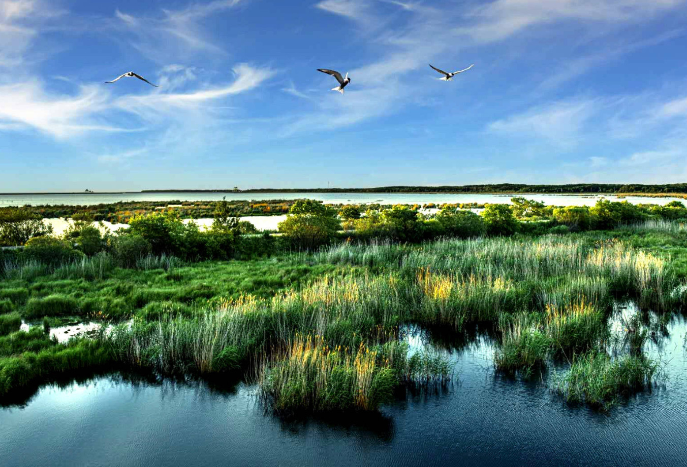
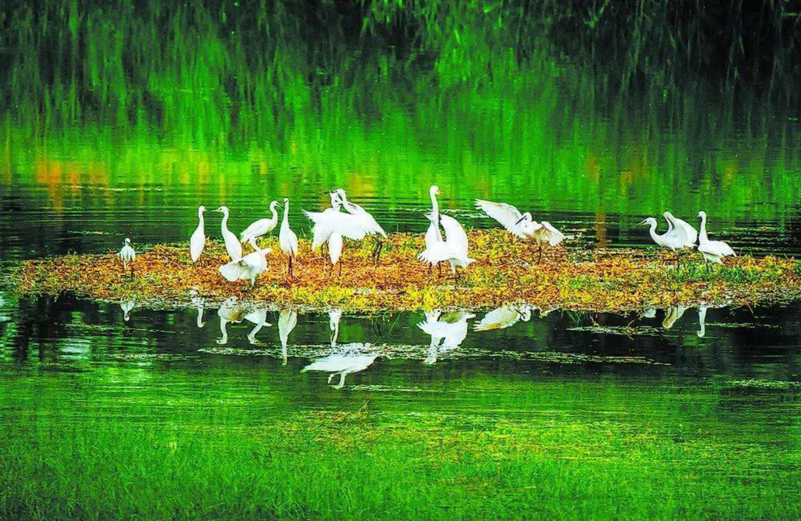
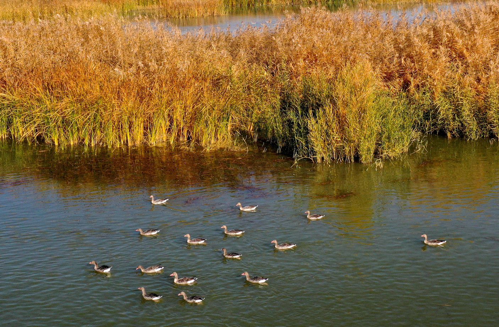
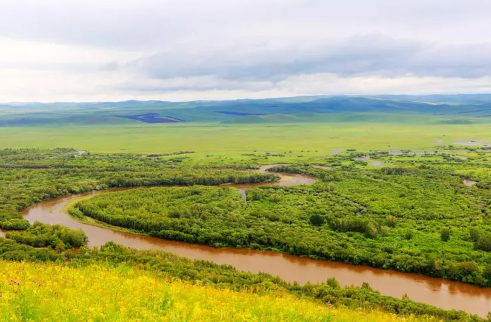
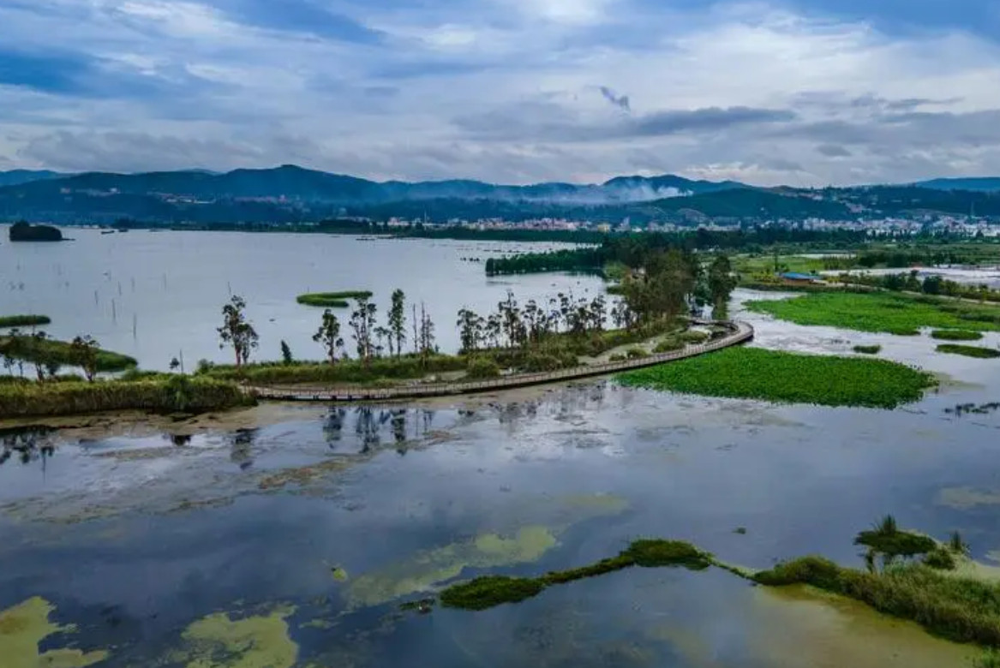
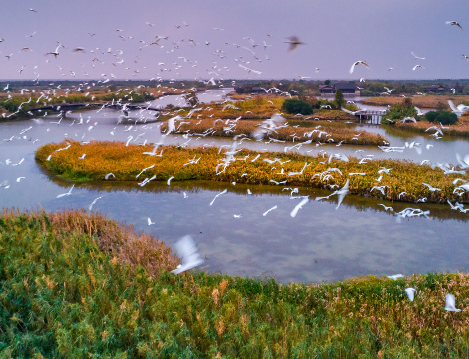

湿地生态系统
湿地生态系统是指由水域和湿地植被组成的特殊生态系统。它们包括沼泽、河流洪泛区、沿海湿地、湖泊、池塘和泥炭地等。湿地生态系统在地球上占据着广泛的分布，为许多植物和动物提供了独特的生存环境。
湿地生态系统具有以下特点：
1. 水的存在：湿地的主要特征是水的存在，可以是静态的水体（如湖泊和池塘）或流动的水（如河流和沿海湿地）。水的存在塑造了湿地的地形和土壤特性。
2. 植被多样性：湿地生态系统通常具有丰富的植被。水生植物如芦苇、香蒲和睡莲在湿地中繁茂生长，提供了栖息地和食物来源。
3. 湿地生物多样性：湿地生态系统是生物多样性的热点之一。它们提供了适宜的栖息地，吸引了各种植物和动物的生存和繁殖。湿地是许多候鸟和迁徙动物的重要停歇地和觅食地。
4. 水文特征：湿地的水文特征对于生态系统的功能至关重要。它们可以在降雨丰富时吸收和储存水分，在干旱时释放水分。湿地还能减缓洪水，过滤和净化水质。
5. 生态服务：湿地生态系统为人类提供重要的生态服务。它们可以改善水质、调节水量、防止海岸侵蚀、提供渔业资源、储存碳等。湿地还具有重要的文化和休闲价值，吸引人们进行观鸟、划船和自然探索等活动。
湿地生态系统的保护至关重要。它们面临许多威胁，如城市化、农业污染、水资源开发、气候变化和入侵物种等。湿地保护的重要性在于维护生物多样性、水资源管理、气候调节和可持续发展。 通过湿地保护，我们可以确保湿地生态系统的持续存在，并为未来的代际提供重要的生态和经济价值。
湿地图册
- 
- 
- 
- 
- 
- 
我国湿地现状
我国湿地面临许多挑战，包括人类活动和自然因素导致湿地减少，湿地退化和污染问题严重，气候变化威胁湿地。为了应对这些问题，我国政府采取了多项措施，如制定湿地保护法律和政策，设立湿地保护区并进行监测和科研工作。此外，我国也积极参与国际湿地保护合作。然而，湿地保护仍需加强法律执行、增加投入和政策支持，提高公众保护意识，推动生态经济与湿地保护协调发展。通过这些努力，我国可以更好地保护湿地资源，实现湿地保护与可持续发展的目标。